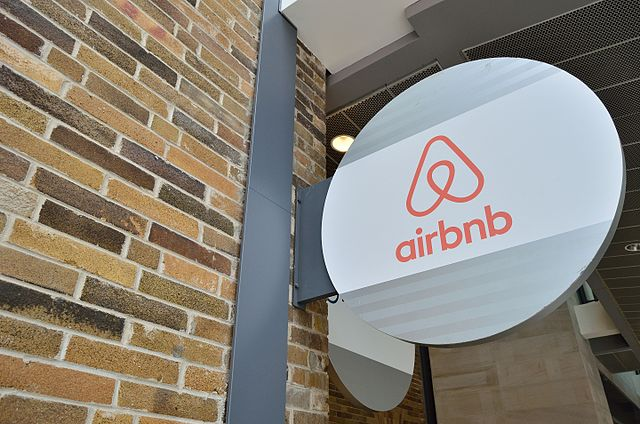

Dataset: Youtube and Spotify
Utilizing the pandas package to format each column to make it organized, then dig into the data to find the differences and the relationships between YouTube and Spotify streaming data. Lastly, acquire insights from data visualization.
Dataset: Nashville Housing Data
This project aimed to organize, standardize, and clean the data with SQL instead of Python or EXCEL.
The result should display the dataset with no duplicates, missing or null values, and more precise column formats.

Dataset: Airbnb New York
After connecting the dataset to Tableau, I made different charts about prices, room types, etc., and integrated them into a dashboard. The main purpose of creating a Tableau dashboard was to allow users to interact with it.
Dataset: Pizza Sales
Utilizing SQL to extract the data from the sales dataset and join the data from tables to find the rank and distribution with different conditions. Finally, I imported the data into Tableau for data visualization.
Dataset: Marketing campaigns
Cleaning the sheet with conditional formatting and some Excel functions, then create pivot tables to find the answers to business questions. Finally, put it all together into a dashboard.
Data: Amazon, Wikipedia
Utilizing BeautifulSoup and other Python packages to search keywords and extract the data we need on random websites. Amazon: tracking the price of the product over some time. Wikipedia: extracting data from the website.